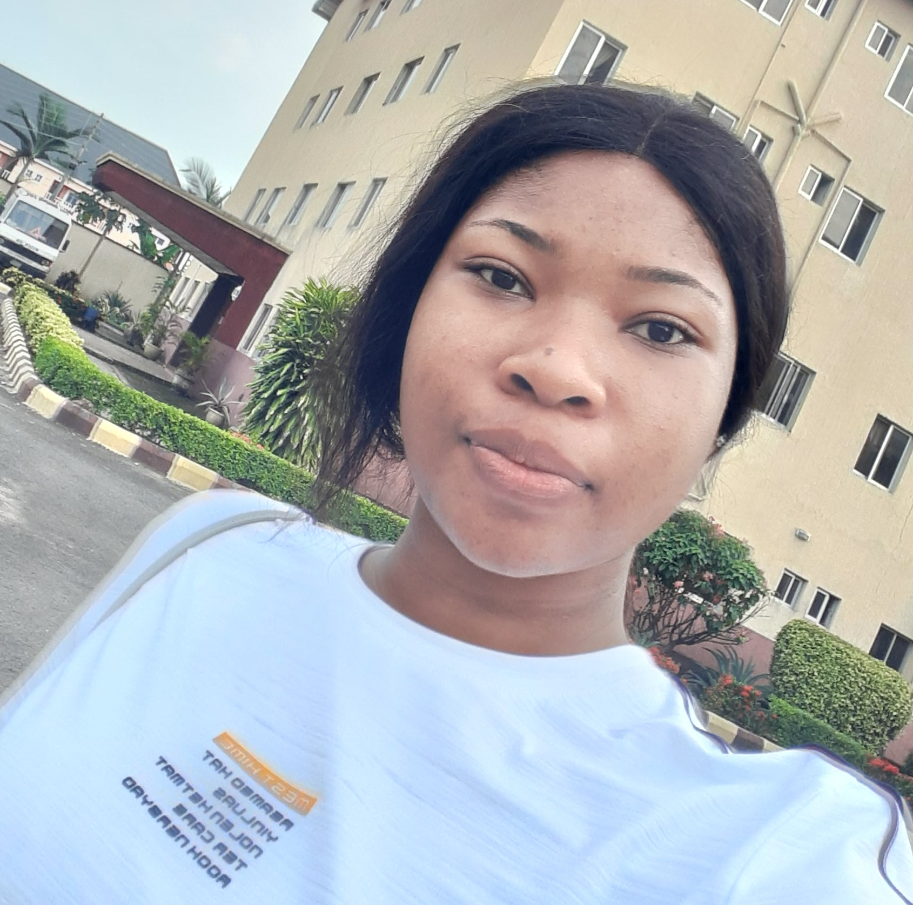

METU MARYCYNTHIA DUMEBI
PROFESSIONAL SUMMARY
To work with the existing staff, contributing the best of my ability towards achieving the organization's goals; and resourcefully add value to my employer and the society at large. I am an organizer and committed to my work, with exceptional listening ability. Also, ability to learn new skills fast and improve on the job.
KEY SKILLS
- Html, Css and Javascript Programmer
- Good Organizational Skills
- Exquiste Research Skills
- Flexibility/Adaptability
- Excellent Communication Skills (Both spoken and written)
- Interpersonal Skills/Work Ethics
- Result Driven/Goal Oriented
WORK EXPERIENCE
Position: Laboratory Assistant. (2021)
National Agency for Food and Drug and Control, Agulu Zonal Laboratory, Anambra State.(NAFDAC)
EDUCATIONAL INSTITUTIONS
- Nnamdi Azikiwe University, Awka, Anambra State. (2017-2021)
- Cor Mariae Girls' Secondary School, Nkpor-agu, Anambra State. (2013-2017)
- Marist Comprehensive College Nteje, Anambra State. (2011-2013)
- Immaculate Conception Nursery/Primary School, Onitsha, Anambra State.(2004-2011)
QUALIFICATIONS
- Applied Biochemistry (B.S.c)
- Senior Secondary School Certificate (WAEC)
- First School Leaving Certificate (FSLC)
STUDENT PROJECT
The effect of esbiothrin fumes on the renal function markers and haematology of male wistar albino rats. (2021)
Others